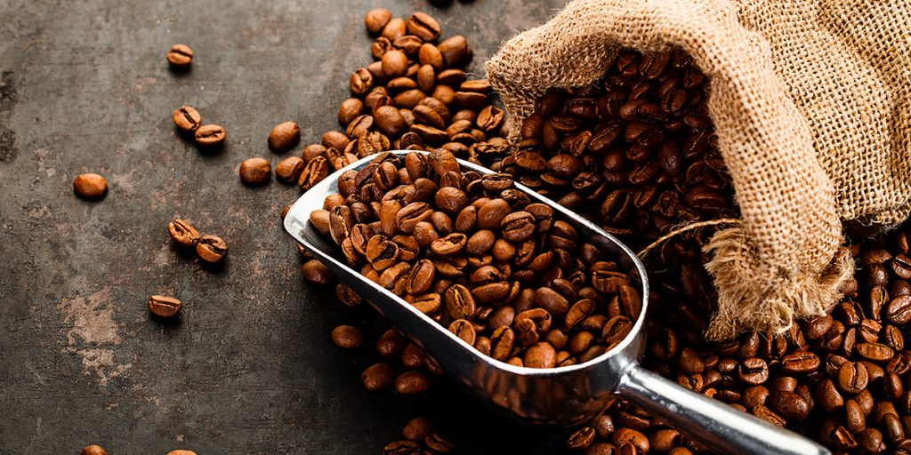
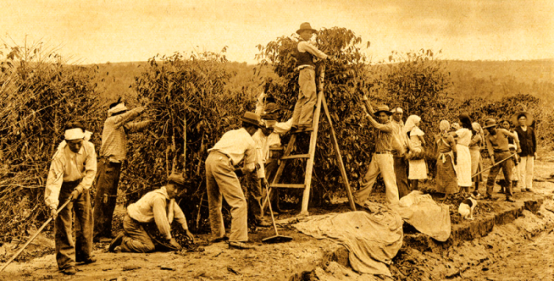

Tudo que você precisa saber sobre o café no nosso país

Origem do cafe no Brasil
A origem do café no Brasil encontra-se no século XVIII. As primeiras mudas de café foram plantadas ainda pelos idos de 1720, na província do Pará. A pessoa que teria trazido as primeiras sementes do café para o Brasil foi Francisco de Melo Palheta, após viagem à Guiana Francesa.
O café já era consumido desde a Antiguidade, quando os habitantes da Etiópia, na África, passaram a conhecer a planta. Depois disso, persas e árabes entraram em contato com esse hábito de consumo, passando o café a ser cultivado em várias partes do mundo. Alguns setores da sociedade europeia possivelmente passaram a beber café depois do século XVII, hábito que se expandiu rapidamente pelo continente.
Esse aumento do consumo do café na Europa e depois nos EUA explica até certo ponto o crescimento da produção do café no Brasil a partir do início do século XIX. As primeiras grandes lavouras de café surgiram na Baixada Fluminense e no Vale do rio Paraíba, nas províncias do Rio de Janeiro e de São Paulo.
O solo e o clima da região favoreceram a produção do café, que se destinava a atender ao mercado consumidor da Europa e dos EUA. Os africanos escravizados formaram a força de trabalho para laborarem no cultivo, colheita e beneficiamento do café. O transporte para o porto do Rio de Janeiro, de onde inicialmente era exportado, era feito no lombo das mulas.
A partir de 1837, o café tornou-se o principal produto de exportação do Brasil Império. Os grandes lucros decorrentes da exportação do café enriqueceram os grandes fazendeiros, os chamados “Barões do café”, e sustentaram financeiramente o Império brasileiro.

Preparo com o jeitinho brasileiro
MÉTODOS DE PREPARO
Preparar um café é um processo mágico, mas que exige bastante atenção, já que existem muitas formas de transformar os grãos na bebida que tanto apreciamos. Do mais simples e tradicional ao mais científico e complexo, cada método prepara cafés com sabores, aromas e texturas únicos.
Vamos apresentar aqui três formas de preparação
A primeira é quando a extração é feita com água constante passando pelo pó de café, o famoso coado (passado).
A segunda, chamada de Infusão, é quando o pó fica em infusão de água por um tempo, até o momento de filtragem.
Por fim, a extração, quando o café é extraído por pressão.
Antes de conhecer cada um desses métodos, guarde duas dicas básicas, que fazem toda diferença: seu café deve ser guardado em um pote bem fechado (para evitar entrada de ar), e ser armazenado em um local seco e longe da luz.
E a água que você utiliza para fazer café deve estar de 90ºC a 92ºC (para chegar a essa temperatura, ferva a água e espere por volta de 1 minuto).
Melhores Cafeterias do Brasil
Café quentinho é uma paixão da maioria dos brasileiros. Por isso, existe uma grande variedade de estabelecimentos que servem essa bebida, que conta com uma grande produção aqui no país. Se você também é fã do grão torrado e ainda curte arquitetura, pode gostar de conhecer uma grande quantidade de cafés estilosos espalhados pelo Brasil.
Mesmo que você não seja um grande apreciador dessa bebida, ainda é possível conferir menus bem diversificados, que podem agradar os mais variados paladares. Até porque, uma refeição em um lugar com uma decoração diferente pode deixar seu dia ainda mais gostoso. Algumas opções contam com grandes espaços, enquanto outras nem tanto. Há possibilidades para quem gosta de natureza, estilo vintage, conforto, literatura e muito mais!